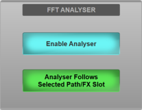
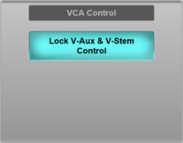

The Options can be found in MENU > Setup > Options.
The following pages detail the settings in each Options tab:
CONSOLE Options
SYSTEM Options
SURFACE Options
USER Options (this page)
USER KEYS Options
REMOTE Options
NETWORK Options
DAW Options
External Control Options
User Options
These settings relate to user-specific options such as Solo modes.
User Options are found in MENU > Setup > Options > USER tab.
Solo Setup
Solo settings and Solo Modes can be adjusted in this section.
For information on each Solo setting please go to the Solo section.
Rehearse Mode (consoles only)
Setting up the Live Recorder and Rehearse Mode is described in detail in the Recording and Rehearse Mode section.
Rehearse Mode can be switched on and off globally (press & hold the Global Rehearse Mode button) or for each individual grou from the Rehearse Mode section of the User Options page.
FFT Analyser
The Enable Analyser button in the FFT ANALYSER section can be used to enable or disable the analyser in the Detail View (refer to the Path EQ section for operational details).
The Analyser Follows Selected Path/FX Slot option is used to determine if, when visible in the Detail View, the analyser follows the Selected path or FX Rack slot, or remains on the path/FX slot it was explicitly enabled on. When this option is engaged, the Detail View Analyser button lights green to indicate it will follow the Selected path/FX Slot.
VCA Control
Control of V-Aux and V-Stem sends (VCA control of bus send levels) can be locked out using the Lock V-Aux & V-Stem Control in the VCA Control section (refer to the Bus Routing section for operational details).
User Keys
Assignable User Keys can now be found in the USER KEYS options tab.

Useful Links
CONSOLE OptionsSYSTEM Options
SURFACE Options
REMOTE Options
USER KEYS Options
NETWORK Options
DAW Options
EXTERNAL CONTROL Options
Solo
Index and Glossary